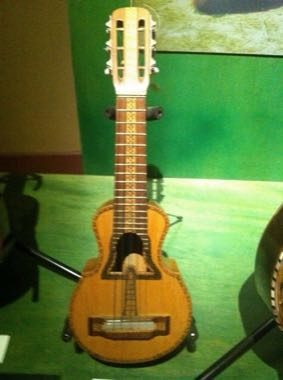

Strum and pluck the ten-string cuatro in time with the beat as the notes scroll, matching chords and melodic runs.
Heritage note
A tradition shared by communities in many places.
Origins
A living tradition passed from person to person; it is not tied to a single dated origin.
Sources
Related entries

Santur Hammer Strings
Iran +3 · Musical instruments
Dan bau
Vietnam · Musical instruments
Santoor
India · Musical instruments
Goje One-String Fiddle
Nigeria +1 · Musical instruments
Masenqo and the azmari
Ethiopia · Musical instruments
Hira gasy village troupe contest
Madagascar · Performance and storytelling